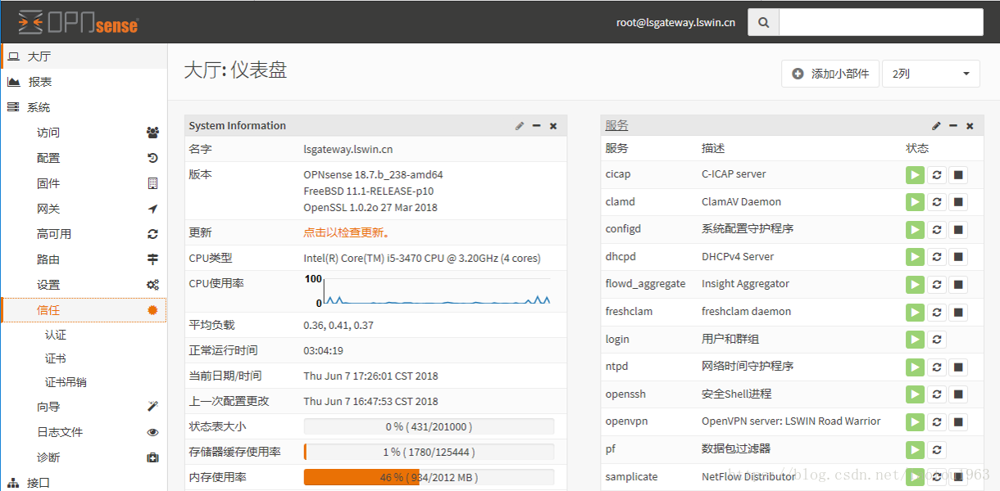
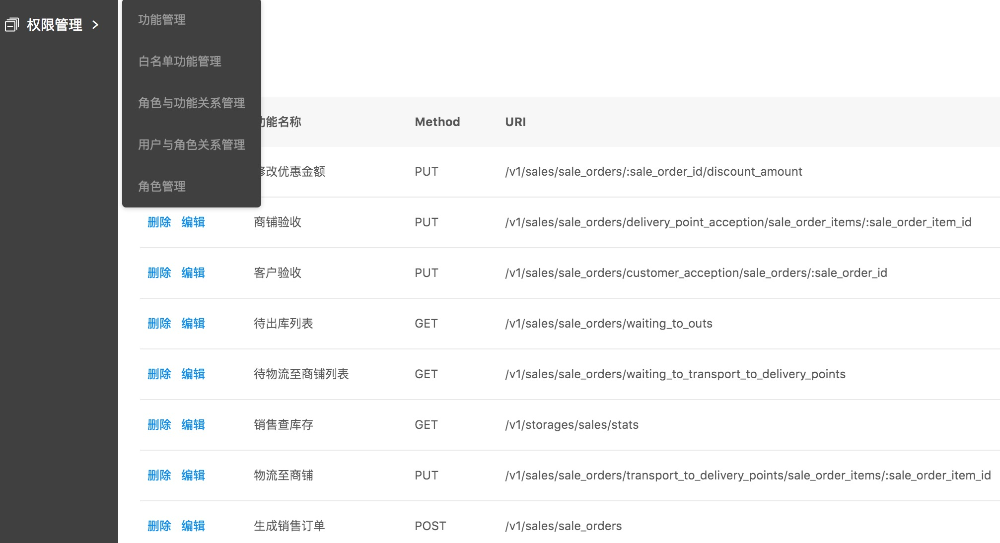
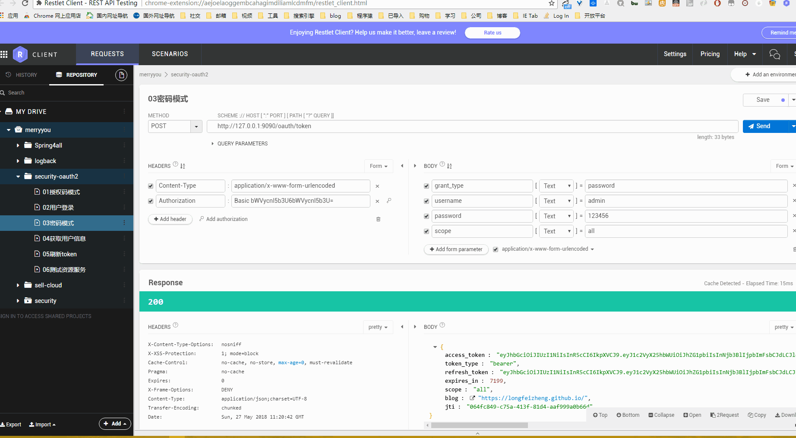
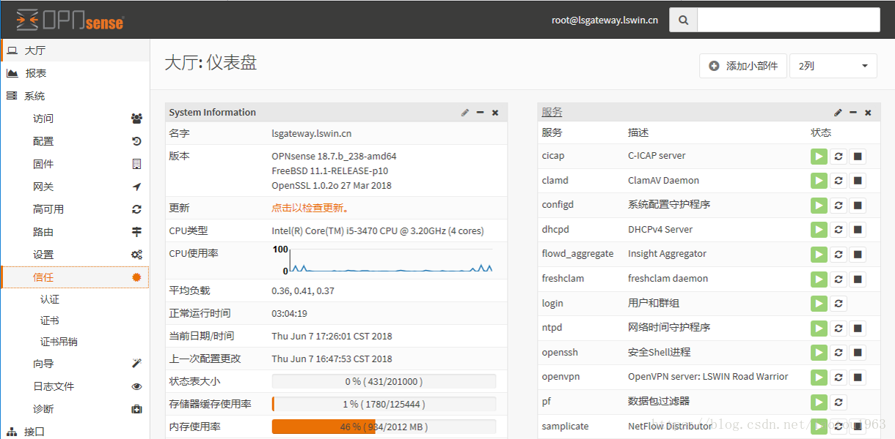
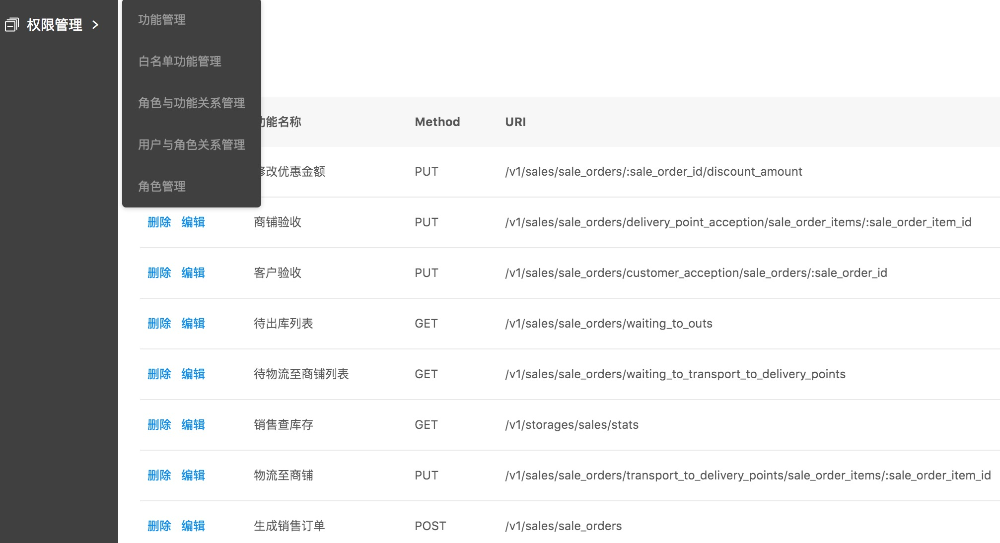
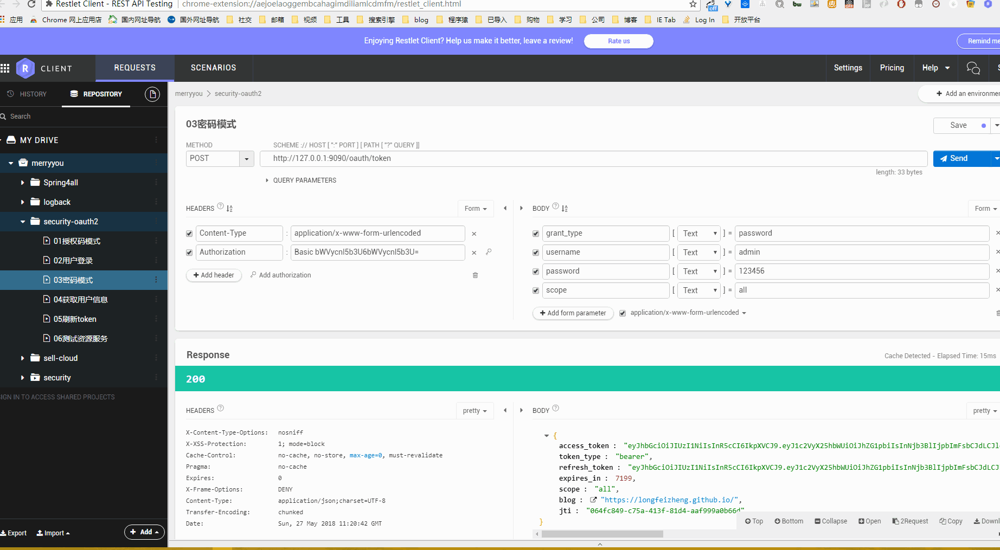

OPNsense
OPNsense 是一个开源易用，而且易于构建的基于 FreeBSD 的防火墙和路由平台。包括大多数商业防火墙的特性。提供功能完整却易用的 GUI 管理界面。

Grbac
Grbac是一个快速，优雅和简洁的RBAC（基于角色的访问控制）框架

oauth2server
提供单点登录，并提供了选择了身份验证提供程序的客户端（GitHub or Google）。

OPNsense 是一个开源易用，而且易于构建的基于 FreeBSD 的防火墙和路由平台。包括大多数商业防火墙的特性。提供功能完整却易用的 GUI 管理界面。

Grbac是一个快速，优雅和简洁的RBAC（基于角色的访问控制）框架

提供单点登录，并提供了选择了身份验证提供程序的客户端（GitHub or Google）。
